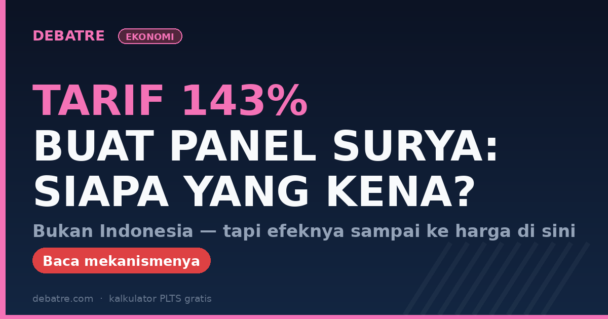
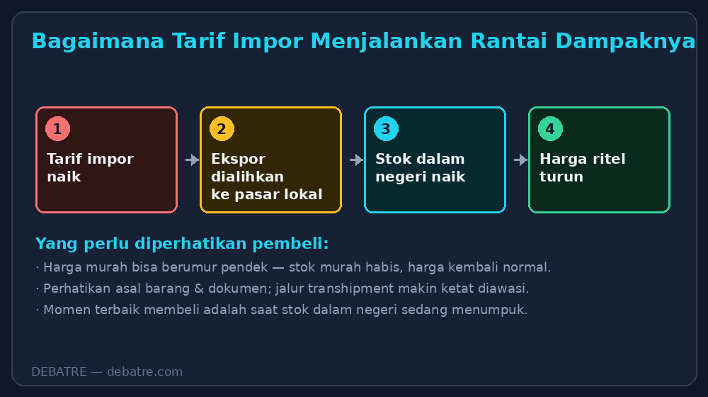

Tarif 143% pada Panel Surya: Apa Artinya bagi Pembeli di Indonesia?
Diperbarui 17 November 2026 | Waktu baca: 8 menit
Catatan editorial: angka tarif 143% yang beredar luas berasal dari kasus Bea Masuk Anti-Dumping dan Countervailing Duty (AD/CVD) Amerika Serikat tahun 2024 yang menyasar impor sel surya dari Kamboja, Malaysia, Thailand, dan Vietnam. Indonesia tidak termasuk dalam lingkup kasus tersebut. Artikel ini menjelaskan mengapa pembeli di Indonesia tetap merasakan efeknya — lewat jalur harga, stok, dan arus perdagangan — tanpa mengklaim Indonesia sebagai sasaran tarif.

Ketika satu negara besar menaikkan tarif impor panel surya, harga tidak langsung berubah di seluruh dunia. Yang terjadi lebih dulu adalah pergeseran barang: panel yang tadinya hendak dikirim ke pasar bertarif tinggi harus dicari pembeli lain. Dari situlah efeknya menjalar sampai ke toko di Indonesia.
Memahami mekanismenya penting, karena tanpa itu orang mudah salah menyimpulkan: “tarifnya untuk Indonesia” atau sebaliknya “tidak ada pengaruh sama sekali”. Keduanya tidak tepat.
Bagaimana efeknya sampai ke sini

Tahap 1 — tarif menutup satu pintu. Produsen yang produknya masuk daftar tarif kehilangan daya saing di pasar itu. Kalau tarifnya 143%, artinya bea masuk mendekati satu setengah kali harga barang — praktis menutup jalur ekspor langsung.
Tahap 2 — barang mencari pasar lain. Volume yang batal masuk ke negara bertarif tinggi dialihkan ke pasar lain, termasuk Asia Tenggara dan Timur Tengah. Pasokan di pasar tujuan baru naik.
Tahap 3 — stok menumpuk di dalam negeri. Untuk negara yang punya kapasitas produksi seperti Vietnam dan Malaysia, sebagian barang tidak bisa keluar dan berputar di pasar domestik serta kawasan.
Tahap 4 — harga ritel tertekan turun. Ini bagian yang menguntungkan pembeli: selama stok berlebih, harga jual panel di kawasan cenderung lebih rendah daripada periode normal.
Kenapa murahnya tidak bertahan lama
Tiga hal yang membuat “harga murah karena tarif” bersifat sementara:
- • Stok berlebih akan terserap. Kalau permintaan tetap tumbuh, kelebihan pasokan hanya bertahan beberapa kuartal, bukan bertahun-tahun.
- • Produsen menyesuaikan kapasitas. Pabrik mengurangi lini produksi atau mengalihkan output ke segmen lain ketika harga jatuh terlalu dalam.
- • Kebijakan bisa berubah cepat. Tarif yang sama bisa diperpanjang, diperlebar cakupannya, atau diganti instrumen lain pada periode berikutnya.
Karena itu, bagi pembeli di Indonesia, tarif impor di negara lain lebih tepat dibaca sebagai peluang waktu — bukan sebagai kondisi permanen yang bisa dijadikan dasar menunda pembelian bertahun-tahun.
Yang benar-benar menentukan harga di toko Indonesia
Untuk pembeli eceran, tarif di negara lain bukan faktor utama. Yang lebih menentukan justru:
- • Kurs rupiah. Panel diimpor dengan dolar, sehingga pergerakan kurs langsung terasa di harga rupiah.
- • Ongkos logistik & ukuran. Panel besar dan berat; biaya kirim dan penanganan patah menambah harga nyata.
- • Pajak dan bea masuk dalam negeri. Ini komponen yang sering dilupakan saat membandingkan harga antarnegara.
- • Mata rantai distribusi. Importer, distributor, dan pengecer masing-masing mengambil margin.
- • Merek dan garansi. Produk dengan garansi resmi biasanya lebih mahal daripada produk tanpa kejelasan penjamin.
Solusi praktis: apa yang perlu dilakukan pembeli
Alih-alih menebak arah kebijakan dagang negara lain, ada lima hal yang lebih berguna dan bisa dikendalikan sendiri:
- • Hitung kebutuhan dulu, baru cari harga. Menentukan kapasitas setelah melihat harga adalah cara paling umum untuk salah beli. Gunakan kalkulator DEBATRE untuk tahu kebutuhan Wp dan Ah sebelum bernegosiasi.
- • Minta spesifikasi tertulis. Daya (Wp), tegangan (Vmp/ Voc), arus (Imp), tipe sel, dan toleransi daya. Tanpa angka ini, “panel 450 Wp murah” tidak bisa dibandingkan secara adil.
- • Cek kejelasan garansi. Garansi produk (biasanya 5–12 tahun) dan garansi performa (biasanya 25 tahun dengan batas penurunan daya per tahun) adalah dua hal berbeda.
- • Pastikan dokumen barang jelas. Perdagangan lewat jalur transhipment makin ketat diawasi; barang tanpa dokumen yang jelas menyulitkan klaim garansi di kemudian hari.
- • Beli saat stok sedang longgar, jangan menunggu “harga terendah”. Selisih harga beberapa persen biasanya lebih kecil daripada kerugian menunda pemasangan berbulan-bulan.
Kesimpulan
Tarif 143% adalah kebijakan Amerika Serikat terhadap pemasok tertentu, bukan tarif yang dikenakan pada Indonesia. Namun efeknya terasa: barang dialihkan, stok kawasan naik, harga sementara tertekan, lalu kembali normal ketika stok terserap. Bagi pembeli di Indonesia, yang paling menentukan biaya akhir tetap kurs, logistik, pajak, dan panjangnya rantai distribusi — bukan besaran tarif di negara lain. Gunakan momentum harga, bukan menunggu kebijakan.
Sumber & rujukan
- • U.S. Department of Commerce — berkas kasus Bea Masuk Anti-Dumping & Countervailing Duty atas sel surya dari Kamboja, Malaysia, Thailand, dan Vietnam (2024) — commerce.gov
- • U.S. International Trade Commission — ringkasan penyelidikan perdagangan (AD/CVD) — usitc.gov
- • WTO — prinsip dasar tarif dan anti-dumping — wto.org
- • Kementerian Energi dan Sumber Daya Mineral — kebijakan PLTS dan TKDN komponen — esdm.go.id
Catatan: besaran tarif, cakupan negara, dan status kebijakan dapat berubah. Sebelum mengambil keputusan bisnis, periksa dokumen resmi terbaru dari otoritas terkait.